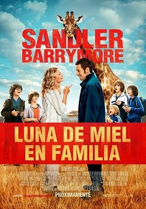

Luna de Miel en Familia, también conocida como ‘Blended’ o ‘Juntos y Revueltos‘, es una comedia familiar con Adam Sandler y Drew Barrymore. The Palace of the Lost City es el hotel donde se grabó la película, en el resort de Sun City, Sudáfrica. Si habéis visto la película, ya conocéis la piscina de olas del complejo y el restaurante Crystal Court del mismo hotel. Las escenas de safari fueron filmadas en el Parque Nacional Pilanesberg (libre de malaria), separado del resort por las vallas del parque.
La estrella adolescente Bella Thorne interpreta a la hija de Adam Sandler, y durante la filmación compartió aventura africana con sus seguidores en los medios sociales, publicando fotos y twiteando que “Cape Town is stunning. #GreatFood #GoodShopping #BeautifulViews” (Ciudad del Cabo es impresionante).
Tanto Sandler como Barrymore también visitaron Ciudad del Cabo en un descanso durante la filmación. Sandler se pasó por Hudson’s, una popular hamburguesería en la trendy Kloof Street, mientras que Barrymore sorprendió a los asistentes a una clase de yoga en el popular Yoga Studio Hot Dog en Sea Point.
Con el ánimo de que tu familia pueda pasar una aventura en África similar a la de la película hemos confeccionado varios itinerarios con diferentes niveles de alojamiento pero siempre incluyendo The Palace of the Lost City. Podemos utilizarlos como base para vuestro safari a medida o diseñar un viaje completamente personalizado. No son itinerarios fijos y se pueden individualizar o alterar para ajustarse a las necesidades y planes de viaje de tu familia.
